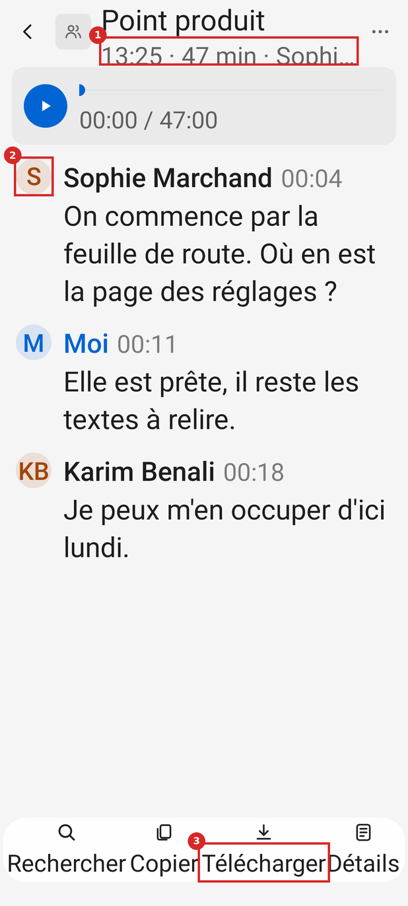
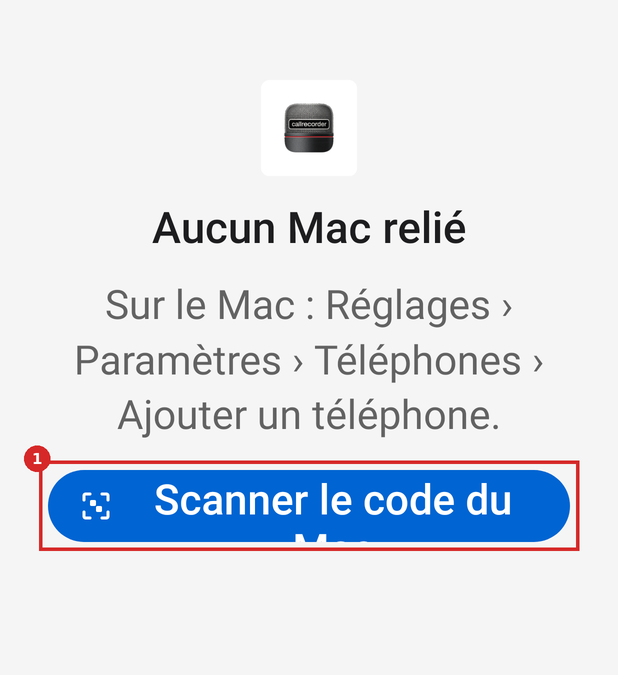

Mesures : 6 couples de couleurs sous le seuil WCAG, 4 pièces sous 48 dp, 85 éléments touchables sans rôle, 15 états rognés à 200 %
Ce qui suit est calculé, pas estimé. Le banc d'inventaire a rendu 246 écrans (41 états × clair et sombre × police 100, 130 et 200 %) et relevé
pour chaque vue sa taille, son texte, sa couleur, le fond composé de ses parents, son rôle et son nom pour TalkBack. outils/mesures.py en tire les tableaux ; les CSV bruts sont dans donnees/.
Méthode et limites
- Rendu : Robolectric 4 (Android 15,
sdk = 35), 412 × 915 dp, xxhdpi (3 px/dp),GraphicsMode.NATIVE. La police agrandie passe parRuntimeEnvironment.setFontScale; Robolectric applique la courbe non linéaire d'Android 14 (13 sp → 17,2 dp à 130 %, 16 sp → 20,3 dp à 200 %). - Fond composé : couleur de chaque parent (ColorDrawable, GradientDrawable, couche non-masque d'un RippleDrawable) posée par transparence sur le fond de l'écran. Les fonds des boîtes de dialogue d'Android (InsetDrawable) ne se lisent pas : les boîtes sont exclues des contrastes, et leurs couleurs relevées à part.
- WCAG 2 : rapport de luminance relative ; seuil 4,5:1, 3:1 pour un texte d'au moins 24 dp, ou 18,66 dp en gras (WCAG 2.2, 1.4.3 et sa note sur le « large scale »). APCA : APCA-W3 0.0.98G-4g, Lc signé (négatif = texte clair sur fond sombre) ; seuils de la table de correspondance « bronze » : Lc 75 pour 16 px, 90 pour 14 px, 60 pour un texte de 24 px ou de 16 px en gras. APCA est donné en indicateur, WCAG 2 reste la règle.
- Ce que le banc ne voit pas : le bouton radio coché (animation non dessinée, l'état est relevé), la vraie matière des boîtes d'un Pixel, les notifications, la page Accessibilité d'Android, le comportement de TalkBack lui-même (on relève ce qu'il recevra : rôle, nom, état, titre).
1. Contrastes du texte
Sous le seuil WCAG 2 (1.4.3)
| Thème | Texte | Fond | Tailles rendues (dp) | WCAG 2 | Seuil | APCA Lc | Où (état : texte) |
|---|---|---|---|---|---|---|---|
| clair | #7B7B7B | #F5F5F5 | 13 · 17.2 | 3.88:1 | 4.5 | 63.3 | conversation/en-direct: '14:23' | conversation/en-direct: '14:24' | conversation/filtre: '00:18' | conversation/longue: '00:04' |
| clair | #0064D2 | #D8D8D8 | 15 | 3.93:1 | 4.5 | 54.3 | accueil/calendrier: '8' |
| clair | #0064D2 | #D7E3F0 | 13 · 17.2 | 4.3:1 | 4.5 | 59.8 | conversation/longue: 'M' | conversation/transcrite-avec-son: 'M' | conversation/transcrite-sans-son: 'M' | journal/avec-texte: 'M' |
| sombre | #0064D2 | #383838 | 15 · 19.5 · 27 | 2.1:1 | 4.5 | -17.4 | accueil/calendrier: '8' |
| sombre | #0064D2 | #282828 | 14 · 18.8 · 26 | 2.64:1 | 4.5 | -21.2 | reglages/calendrier-sans-calendrier: 'Relier un calendrier' |
| sombre | #0064D2 | #1E1E1E | 14 · 18.8 · 26 | 2.98:1 | 4.5 | -22.8 | accueil/ecoute: '● Écoute depuis 13:22' |
Lecture : les heures des répliques (ink(0.5), ConversationScreen.kt:325) échouent en clair sur 19 rendus ; l'initiale de « Moi » (accent sur sa teinte à 12 %, ConversationScreen.kt:355) échoue à 4,30 ; le chiffre d'aujourd'hui sur le jour choisi (HomeScreen.kt:316) à 3,93 en clair et 2,10 en sombre ; tout l'accent en sombre échoue (2,10 à 2,98).
Répartition
| Thème | Couples | WCAG 2 OK | WCAG 2 échec | APCA au seuil | APCA sous le seuil |
|---|---|---|---|---|---|
| clair | 90 | 85 | 5 | 52 | 38 |
| sombre | 90 | 81 | 9 | 29 | 61 |
85 couples conformes à WCAG 2 mais sous le seuil APCA (les plus faibles d'abord)
| Thème | Texte | Fond | Taille dp | Gras | WCAG 2 | APCA Lc | Seuil APCA | Exemples |
|---|---|---|---|---|---|---|---|---|
| sombre | #8E8E8E | #1E1E1E | 13 | 5.09 | -39.7 | 100 | conversation/en-direct: '14:22' | conversation/en-direct: '14:23' | conversation/filtre: '00:18' | conversation/longue: '00:04' | |
| sombre | #8E8E8E | #1E1E1E | 17.2 | 5.09 | -39.7 | 75 | conversation/en-direct: '14:22' | conversation/en-direct: '14:23' | conversation/filtre: '00:18' | conversation/longue: '00:04' | |
| sombre | #8E8E8E | #1E1E1E | 25 | 5.09 | -39.7 | 60 | conversation/en-direct: '14:23' | conversation/en-direct: '14:24' | conversation/filtre: '00:18' | conversation/longue: '00:04' | |
| sombre | #FF453A | #1E1E1E | 14 | 4.89 | -39.8 | 90 | accueil/enregistrement: '14:22 · ● En cours · 0 s' | accueil/enregistrement-appel: '14:22 · ● En cours · 0 s' | |
| sombre | #FF453A | #1E1E1E | 16 | 4.89 | -39.8 | 75 | accueil/enregistrement: "Arrêter l'enregistrement" | accueil/enregistrement-appel: "Arrêter l'enregistrement" | |
| sombre | #FF453A | #1E1E1E | 18.8 | 4.89 | -39.8 | 75 | accueil/enregistrement: '14:22 · ● En cours · 0 s' | accueil/enregistrement-appel: '14:22 · ● En cours · 0 s' | |
| sombre | #FF453A | #1E1E1E | 20.2 | 4.89 | -39.8 | 75 | accueil/enregistrement: "Arrêter l'enregistrement" | accueil/enregistrement-appel: "Arrêter l'enregistrement" | |
| sombre | #FF453A | #1E1E1E | 26 | 4.89 | -39.8 | 60 | accueil/enregistrement: '14:23 · ● En cours · 0 s' | accueil/enregistrement-appel: '14:23 · ● En cours · 0 s' | |
| sombre | #FF453A | #1E1E1E | 28 | 4.89 | -39.8 | 60 | accueil/enregistrement: "Arrêter l'enregistrement" | accueil/enregistrement-appel: "Arrêter l'enregistrement" | |
| sombre | #409CFF | #222D39 | 13 | oui | 4.94 | -43.6 | 100 | conversation/longue: 'M' | conversation/transcrite-avec-son: 'M' | conversation/transcrite-sans-son: 'M' | journal/avec-texte: 'M' |
| sombre | #409CFF | #222D39 | 17.2 | oui | 4.94 | -43.6 | 60 | conversation/longue: 'M' | conversation/transcrite-avec-son: 'M' | conversation/transcrite-sans-son: 'M' | journal/avec-texte: 'M' |
| sombre | #409CFF | #222D39 | 25 | oui | 4.94 | -43.6 | 60 | conversation/longue: 'M' | conversation/transcrite-avec-son: 'M' | conversation/transcrite-sans-son: 'M' | journal/avec-texte: 'M' |
| sombre | #409CFF | #1E1E1E | 15 | oui | 5.89 | -46.1 | 75 | conversation/longue: 'Moi' | conversation/transcrite-avec-son: 'Moi' | conversation/transcrite-sans-son: 'Moi' | journal/avec-texte: 'Moi' |
| sombre | #409CFF | #1E1E1E | 19.5 | oui | 5.89 | -46.1 | 60 | conversation/longue: 'Moi' | conversation/transcrite-avec-son: 'Moi' | conversation/transcrite-sans-son: 'Moi' | journal/avec-texte: 'Moi' |
| sombre | #409CFF | #1E1E1E | 27 | oui | 5.89 | -46.1 | 60 | conversation/longue: 'Moi' | conversation/transcrite-avec-son: 'Moi' | conversation/transcrite-sans-son: 'Moi' | journal/avec-texte: 'Moi' |
| sombre | #A9A9A9 | #1E1E1E | 12 | 7.09 | -53.9 | 100 | accueil/calendrier: 'L' | accueil/calendrier: 'M' | accueil/calendrier: 'J' | accueil/calendrier: 'V' | |
| sombre | #A9A9A9 | #1E1E1E | 14 | oui | 7.09 | -53.9 | 75 | accueil/calendrier: "Aujourd'hui · dimanche 8 novembre" | accueil/calendrier-jour-vide: "Aujourd'hui · dimanche 8 novembre" | accueil/ecoute |
| sombre | #A9A9A9 | #1E1E1E | 14 | 7.09 | -53.9 | 90 | accueil/calendrier: '13:22 · 47 min · Sophie Marchand, Karim ' | accueil/calendrier: '11:22 · 12 min · Thomas Girard' | accueil/calendrier-j | |
| sombre | #A9A9A9 | #1E1E1E | 16 | 7.09 | -53.9 | 75 | accueil/calendrier: 'Enregistrer une réunion' | accueil/calendrier: 'Réglages' | accueil/calendrier-jour-vide: 'Enregistrer une réunion' | a | |
| sombre | #A9A9A9 | #1E1E1E | 15.6 | 7.09 | -53.9 | 90 | accueil/calendrier: 'L' | accueil/calendrier: 'M' | accueil/calendrier: 'J' | accueil/calendrier: 'V' | |
| sombre | #A9A9A9 | #1E1E1E | 18.8 | oui | 7.09 | -53.9 | 60 | accueil/calendrier: "Aujourd'hui · dimanche 8 novembre" | accueil/calendrier-jour-vide: "Aujourd'hui · dimanche 8 novembre" | accueil/ecoute |
| sombre | #A9A9A9 | #1E1E1E | 18.8 | 7.09 | -53.9 | 75 | accueil/calendrier: '13:22 · 47 min · Sophie Marchand, Karim ' | accueil/calendrier: '11:22 · 12 min · Thomas Girard' | accueil/calendrier-j | |
| sombre | #A9A9A9 | #1E1E1E | 20.2 | 7.09 | -53.9 | 75 | accueil/calendrier: 'Enregistrer une réunion' | accueil/calendrier: 'Réglages' | accueil/calendrier-jour-vide: 'Enregistrer une réunion' | a | |
| sombre | #A9A9A9 | #1E1E1E | 24 | 7.09 | -53.9 | 60 | accueil/calendrier: 'L' | accueil/calendrier: 'M' | accueil/calendrier: 'J' | accueil/calendrier: 'V' | |
| sombre | #A9A9A9 | #1E1E1E | 26 | oui | 7.09 | -53.9 | 60 | accueil/calendrier: "Aujourd'hui · dimanche 8 novembre" | accueil/calendrier-jour-vide: "Aujourd'hui · dimanche 8 novembre" | accueil/ecoute |
| sombre | #A9A9A9 | #1E1E1E | 26 | 7.09 | -53.9 | 60 | accueil/calendrier: '13:22 · 47 min · Sophie Marchand, Karim ' | accueil/calendrier: '11:22 · 12 min · Thomas Girard' | accueil/calendrier-j | |
| sombre | #A9A9A9 | #1E1E1E | 28 | 7.09 | -53.9 | 60 | accueil/calendrier: 'Enregistrer une réunion' | accueil/calendrier: 'Réglages' | accueil/calendrier-jour-vide: 'Enregistrer une réunion' | a | |
| sombre | #A9A9A9 | #1E1E1E | 13 | 7.09 | -53.9 | 100 | conversation/aucune-parole: '13:22 · 30 min' | conversation/en-direct: '14:22 · ● En cours · 0 s' | conversation/en-direct-rien: '14:22 · ● | |
| sombre | #A9A9A9 | #1E1E1E | 15 | 7.09 | -53.9 | 90 | conversation/aucune-parole: 'Aucune parole reconnue' | conversation/en-direct-rien: "Rien d'entendu pour l'instant." | conversation/pas-enco | |
| sombre | #A9A9A9 | #1E1E1E | 17.2 | 7.09 | -53.9 | 75 | conversation/aucune-parole: '13:22 · 30 min' | conversation/en-direct: '14:22 · ● En cours · 0 s' | conversation/en-direct-rien: '14:22 · ● | |
| sombre | #A9A9A9 | #1E1E1E | 19.5 | 7.09 | -53.9 | 75 | conversation/aucune-parole: 'Aucune parole reconnue' | conversation/en-direct-rien: "Rien d'entendu pour l'instant." | conversation/pas-enco | |
| sombre | #A9A9A9 | #1E1E1E | 25 | 7.09 | -53.9 | 60 | conversation/aucune-parole: '13:22 · 30 min' | conversation/en-direct: '14:23 · ● En cours · 0 s' | conversation/en-direct-rien: '14:23 · ● | |
| sombre | #A9A9A9 | #1E1E1E | 27 | 7.09 | -53.9 | 60 | conversation/aucune-parole: 'Aucune parole reconnue' | conversation/en-direct-rien: "Rien d'entendu pour l'instant." | conversation/pas-enco | |
| clair | #0064D2 | #D8D8D8 | 19.5 | oui | 3.93 | 54.3 | 60 | accueil/calendrier: '8' |
| clair | #0064D2 | #D8D8D8 | 27 | oui | 3.93 | 54.3 | 60 | accueil/calendrier: '8' |
| sombre | #ADADAD | #282828 | 12 | 6.57 | -54.4 | 100 | conversation/pas-encore-arrivee: '00:00 / 47:00' | conversation/transcrite-avec-son: '00:00 / 47:00' | |
| sombre | #ADADAD | #282828 | 15.6 | 6.57 | -54.4 | 90 | conversation/pas-encore-arrivee: '00:00 / 47:00' | conversation/transcrite-avec-son: '00:00 / 47:00' | |
| sombre | #ADADAD | #282828 | 24 | 6.57 | -54.4 | 60 | conversation/pas-encore-arrivee: '00:00 / 47:00' | conversation/transcrite-avec-son: '00:00 / 47:00' | |
| sombre | #ADADAD | #282828 | 13 | 6.57 | -54.4 | 100 | reglages/calendrier-du-mac: 'Tous les appels, téléphone ou app.' | reglages/calendrier-sans-calendrier: 'Tous les appels, téléphone ou app.' | |
| sombre | #ADADAD | #282828 | 15 | 6.57 | -54.4 | 90 | reglages/calendrier-du-mac: 'MacBook Air' | reglages/calendrier-sans-calendrier: 'MacBook Air' | reglages/manuel: 'Non relié' | reglages/man | |
| sombre | #ADADAD | #282828 | 17.2 | 6.57 | -54.4 | 75 | reglages/calendrier-du-mac: 'Tous les appels, téléphone ou app.' | reglages/calendrier-sans-calendrier: 'Tous les appels, téléphone ou app.' | |
| sombre | #ADADAD | #282828 | 19.5 | 6.57 | -54.4 | 75 | reglages/calendrier-du-mac: 'MacBook Air' | reglages/calendrier-sans-calendrier: 'MacBook Air' | reglages/manuel: 'Non relié' | reglages/man | |
| sombre | #ADADAD | #282828 | 25 | 6.57 | -54.4 | 60 | reglages/calendrier-du-mac: 'Tous les appels, téléphone ou app.' | reglages/calendrier-sans-calendrier: 'Tous les appels, téléphone ou app.' | |
| sombre | #ADADAD | #282828 | 27 | 6.57 | -54.4 | 60 | reglages/calendrier-du-mac: 'MacBook Air' | reglages/calendrier-sans-calendrier: 'MacBook Air' | reglages/manuel: 'Non relié' | reglages/man | |
| sombre | #FF9F0A | #392D1B | 13 | oui | 6.53 | -57.8 | 100 | conversation/filtre: 'KB' | conversation/longue: 'JR' | conversation/longue: 'ML' | conversation/transcrite-avec-son: 'SM' |
| sombre | #FF9F0A | #392D1B | 17.2 | oui | 6.53 | -57.8 | 60 | conversation/filtre: 'KB' | conversation/longue: 'JR' | conversation/longue: 'ML' | conversation/transcrite-avec-son: 'SM' |
| sombre | #FF9F0A | #392D1B | 25 | oui | 6.53 | -57.8 | 60 | conversation/filtre: 'KB' | conversation/longue: 'JR' | conversation/longue: 'ML' | conversation/transcrite-avec-son: 'SM' |
| sombre | #FF9F0A | #282828 | 14 | 7.17 | -59.2 | 90 | reglages/calendrier-sans-calendrier: 'Aucun calendrier relié : rien ne se décl' | |
| sombre | #FF9F0A | #282828 | 15 | 7.17 | -59.2 | 90 | reglages/calendrier-sans-calendrier: 'Non relié' | |
| sombre | #FF9F0A | #282828 | 18.8 | 7.17 | -59.2 | 75 | reglages/calendrier-sans-calendrier: 'Aucun calendrier relié : rien ne se décl' | |
| sombre | #FF9F0A | #282828 | 19.5 | 7.17 | -59.2 | 75 | reglages/calendrier-sans-calendrier: 'Non relié' | |
| sombre | #FF9F0A | #282828 | 26 | 7.17 | -59.2 | 60 | reglages/calendrier-sans-calendrier: 'Aucun calendrier relié : rien ne se décl' | |
| sombre | #FF9F0A | #282828 | 27 | 7.17 | -59.2 | 60 | reglages/calendrier-sans-calendrier: 'Non relié' | |
| clair | #0064D2 | #D7E3F0 | 25 | oui | 4.3 | 59.8 | 60 | conversation/longue: 'M' | conversation/transcrite-avec-son: 'M' | conversation/transcrite-sans-son: 'M' | journal/avec-texte: 'M' |
| clair | #A0470A | #EADFD8 | 13 | oui | 4.72 | 62.4 | 100 | conversation/filtre: 'KB' | conversation/longue: 'JR' | conversation/longue: 'ML' | conversation/transcrite-avec-son: 'SM' |
| clair | #0064D2 | #E9E9E9 | 14 | oui | 4.61 | 64.1 | 75 | reglages/calendrier-sans-calendrier: 'Relier un calendrier' |
| clair | #A0470A | #E9E9E9 | 14 | 5.09 | 67.1 | 90 | reglages/calendrier-sans-calendrier: 'Aucun calendrier relié : rien ne se décl' | |
| clair | #A0470A | #E9E9E9 | 15 | 5.09 | 67.1 | 90 | reglages/calendrier-sans-calendrier: 'Non relié' | |
| clair | #A0470A | #E9E9E9 | 18.8 | 5.09 | 67.1 | 75 | reglages/calendrier-sans-calendrier: 'Aucun calendrier relié : rien ne se décl' | |
| clair | #A0470A | #E9E9E9 | 19.5 | 5.09 | 67.1 | 75 | reglages/calendrier-sans-calendrier: 'Non relié' | |
| clair | #5D5D5D | #E9E9E9 | 12 | 5.42 | 69.6 | 100 | conversation/pas-encore-arrivee: '00:00 / 47:00' | conversation/transcrite-avec-son: '00:00 / 47:00' | |
| clair | #5D5D5D | #E9E9E9 | 15.6 | 5.42 | 69.6 | 90 | conversation/pas-encore-arrivee: '00:00 / 47:00' | conversation/transcrite-avec-son: '00:00 / 47:00' | |
| clair | #5D5D5D | #E9E9E9 | 13 | 5.42 | 69.6 | 100 | reglages/calendrier-du-mac: 'Tous les appels, téléphone ou app.' | reglages/calendrier-sans-calendrier: 'Tous les appels, téléphone ou app.' | |
| clair | #5D5D5D | #E9E9E9 | 15 | 5.42 | 69.6 | 90 | reglages/calendrier-du-mac: 'MacBook Air' | reglages/calendrier-sans-calendrier: 'MacBook Air' | reglages/manuel: 'Non relié' | reglages/man | |
| clair | #5D5D5D | #E9E9E9 | 17.2 | 5.42 | 69.6 | 75 | reglages/calendrier-du-mac: 'Tous les appels, téléphone ou app.' | reglages/calendrier-sans-calendrier: 'Tous les appels, téléphone ou app.' | |
| clair | #5D5D5D | #E9E9E9 | 19.5 | 5.42 | 69.6 | 75 | reglages/calendrier-du-mac: 'MacBook Air' | reglages/calendrier-sans-calendrier: 'MacBook Air' | reglages/manuel: 'Non relié' | reglages/man | |
| clair | #6D6D6D | #F5F5F5 | 12 | 4.75 | 69.7 | 100 | accueil/calendrier: 'L' | accueil/calendrier: 'M' | accueil/calendrier: 'J' | accueil/calendrier: 'V' | |
| clair | #6D6D6D | #F5F5F5 | 14 | oui | 4.75 | 69.7 | 75 | accueil/calendrier: "Aujourd'hui · dimanche 8 novembre" | accueil/calendrier-jour-vide: "Aujourd'hui · dimanche 8 novembre" | accueil/ecoute |
| clair | #6D6D6D | #F5F5F5 | 15.6 | 4.75 | 69.7 | 90 | accueil/calendrier: 'L' | accueil/calendrier: 'M' | accueil/calendrier: 'J' | accueil/calendrier: 'V' | |
| clair | #0064D2 | #F5F5F5 | 14 | 5.13 | 71.1 | 90 | accueil/ecoute: '● Écoute depuis 13:23' | |
| clair | #0064D2 | #F5F5F5 | 18.8 | 5.13 | 71.1 | 75 | accueil/ecoute: '● Écoute depuis 13:24' | |
| clair | #0064D2 | #F5F5F5 | 15 | oui | 5.13 | 71.1 | 75 | conversation/longue: 'Moi' | conversation/transcrite-avec-son: 'Moi' | conversation/transcrite-sans-son: 'Moi' | journal/avec-texte: 'Moi' |
| clair | #C41E14 | #F5F5F5 | 14 | 5.44 | 71.7 | 90 | accueil/enregistrement: '14:23 · ● En cours · 0 s' | accueil/enregistrement-appel: '14:23 · ● En cours · 0 s' | |
| clair | #C41E14 | #F5F5F5 | 16 | 5.44 | 71.7 | 75 | accueil/enregistrement: "Arrêter l'enregistrement" | accueil/enregistrement-appel: "Arrêter l'enregistrement" | |
| clair | #C41E14 | #F5F5F5 | 18.8 | 5.44 | 71.7 | 75 | accueil/enregistrement: '14:24 · ● En cours · 0 s' | accueil/enregistrement-appel: '14:24 · ● En cours · 0 s' | |
| clair | #C41E14 | #F5F5F5 | 20.2 | 5.44 | 71.7 | 75 | accueil/enregistrement: "Arrêter l'enregistrement" | accueil/enregistrement-appel: "Arrêter l'enregistrement" | |
| clair | #626262 | #F5F5F5 | 14 | 5.59 | 74.5 | 90 | accueil/calendrier: '13:23 · 47 min · Sophie Marchand, Karim ' | accueil/calendrier: '11:23 · 12 min · Thomas Girard' | accueil/calendrier-j | |
| clair | #626262 | #F5F5F5 | 16 | 5.59 | 74.5 | 75 | accueil/calendrier: 'Enregistrer une réunion' | accueil/calendrier: 'Réglages' | accueil/calendrier-jour-vide: 'Enregistrer une réunion' | a | |
| clair | #626262 | #F5F5F5 | 18.8 | 5.59 | 74.5 | 75 | accueil/calendrier: '13:24 · 47 min · Sophie Marchand, Karim ' | accueil/calendrier: '11:24 · 12 min · Thomas Girard' | accueil/calendrier-j | |
| clair | #626262 | #F5F5F5 | 20.2 | 5.59 | 74.5 | 75 | accueil/calendrier: 'Enregistrer une réunion' | accueil/calendrier: 'Réglages' | accueil/calendrier-jour-vide: 'Enregistrer une réunion' | a | |
| clair | #626262 | #F5F5F5 | 13 | 5.59 | 74.5 | 100 | conversation/aucune-parole: '13:23 · 30 min' | conversation/en-direct: '14:23 · ● En cours · 0 s' | conversation/en-direct-rien: '14:23 · ● | |
| clair | #626262 | #F5F5F5 | 15 | 5.59 | 74.5 | 90 | conversation/aucune-parole: 'Aucune parole reconnue' | conversation/en-direct-rien: "Rien d'entendu pour l'instant." | conversation/pas-enco | |
| clair | #626262 | #F5F5F5 | 17.2 | 5.59 | 74.5 | 75 | conversation/aucune-parole: '13:24 · 30 min' | conversation/en-direct: '14:24 · ● En cours · 0 s' | conversation/en-direct-rien: '14:24 · ● | |
| clair | #626262 | #F5F5F5 | 19.5 | 5.59 | 74.5 | 75 | conversation/aucune-parole: 'Aucune parole reconnue' | conversation/en-direct-rien: "Rien d'entendu pour l'instant." | conversation/pas-enco | |
| sombre | #F5F5F7 | #2B2B2D | 12 | 12.98 | -97.3 | 100 | conversation/aucune-parole: 'Rechercher' | conversation/aucune-parole: 'Copier' | conversation/aucune-parole: 'Télécharger' | conversation/a |
Ce qu'APCA ajoute : les textes de 13 et 14 sp en gris secondaire (0,6) passent WCAG 2 (5,6:1) mais restent sous Lc 90, le seuil APCA pour un texte de contenu de cette taille. C'est l'argument pour ne pas descendre sous 14 sp en gris, et garder 12 sp pour l'accessoire (heures, mots d'outil).
2. Contrastes hors texte (WCAG 1.4.11, 3:1)
| Élément | Thème | Couleur | Fond | Rapport | APCA Lc | 1.4.11 |
|---|---|---|---|---|---|---|
| Accent LinkService.ACCENT en texte (Relier un calendrier, Journal, aujourd'hui) | clair | #0064D2 | #F5F5F5 | 5.13 | 71.1 | OK |
| Accent LinkService.ACCENT en texte (Relier un calendrier, Journal, aujourd'hui) | sombre | #0064D2 | #1E1E1E | 2.98 | -22.8 | sous 3:1 |
| Accent du sombre prévu par Tone.INFO (#409CFF) | clair | #0064D2 | #F5F5F5 | 5.13 | 71.1 | OK |
| Accent du sombre prévu par Tone.INFO (#409CFF) | sombre | #409CFF | #1E1E1E | 5.89 | -46.1 | OK |
| Accent sur carte (Relier un calendrier dans le groupe) | clair | #0064D2 | #E9E9E9 | 4.61 | 64.1 | OK |
| Accent sur carte (Relier un calendrier dans le groupe) | sombre | #0064D2 | #292929 | 2.6 | -21.0 | sous 3:1 |
| Icônes secondaires (ink 0,6/0,62) | clair | #626262 | #F5F5F5 | 5.59 | 74.5 | OK |
| Icônes secondaires (ink 0,6/0,62) | sombre | #AAAAAA | #1E1E1E | 7.18 | -54.4 | OK |
| Chevron des Réglages (ink 0,4) | clair | #939393 | #E9E9E9 | 2.53 | 44.6 | sous 3:1 |
| Chevron des Réglages (ink 0,4) | sombre | #787878 | #292929 | 3.3 | -27.4 | OK |
| Heure d'une réplique (ink 0,5) | clair | #7A7A7A | #F5F5F5 | 3.94 | 63.8 | OK |
| Heure d'une réplique (ink 0,5) | sombre | #8E8E8E | #1E1E1E | 5.09 | -39.7 | OK |
| Point d'un jour (ink 0,45) | clair | #878787 | #F5F5F5 | 3.3 | 57.6 | OK |
| Point d'un jour (ink 0,45) | sombre | #838383 | #1E1E1E | 4.4 | -34.4 | OK |
| Vignette par défaut (ink 0,55) sur sa plaque 0,07 | clair | #6E6E6E | #E4E4E4 | 4.01 | 59.3 | OK |
| Vignette par défaut (ink 0,55) sur sa plaque 0,07 | sombre | #9A9A9A | #2E2E2E | 4.83 | -43.0 | OK |
| Signal #3B45FD sur plaque | clair | #3B45FD | #E4E4E4 | 4.78 | 63.3 | OK |
| Signal #3B45FD sur plaque | sombre | #3B45FD | #2E2E2E | 2.23 | -17.9 | sous 3:1 |
| WhatsApp #25D366 sur plaque | clair | #25D366 | #E4E4E4 | 1.56 | 21.8 | sous 3:1 |
| WhatsApp #25D366 sur plaque | sombre | #25D366 | #2E2E2E | 6.85 | -60.0 | OK |
| Telegram #26A5E4 sur plaque | clair | #26A5E4 | #E4E4E4 | 2.18 | 37.0 | sous 3:1 |
| Telegram #26A5E4 sur plaque | sombre | #26A5E4 | #2E2E2E | 4.9 | -44.3 | OK |
| Meet #00897B sur plaque | clair | #00897B | #E4E4E4 | 3.4 | 53.4 | OK |
| Meet #00897B sur plaque | sombre | #00897B | #2E2E2E | 3.15 | -27.7 | OK |
| Point rouge des appels #D32F2F | clair | #D32F2F | #F5F5F5 | 4.57 | 66.9 | OK |
| Point rouge des appels #D32F2F | sombre | #D32F2F | #1E1E1E | 3.35 | -27.0 | OK |
| Enregistrement Tone.LIVE | clair | #C41E14 | #F5F5F5 | 5.44 | 71.7 | OK |
| Enregistrement Tone.LIVE | sombre | #FF453A | #1E1E1E | 4.89 | -39.8 | OK |
| Avertissement Tone.WARNING sur carte | clair | #A0470A | #E9E9E9 | 5.09 | 67.1 | OK |
| Avertissement Tone.WARNING sur carte | sombre | #FF9F0A | #292929 | 7.08 | -59.0 | OK |
| Texte blanc sur bouton accent (Scanner le code du Mac) | clair | #FFFFFF | #0064D2 | 5.59 | -82.4 | OK |
| Texte blanc sur bouton accent (Scanner le code du Mac) | sombre | #FFFFFF | #0064D2 | 5.59 | -82.4 | OK |
| Bouton accent sur fond (contour de la forme) | clair | #0064D2 | #F5F5F5 | 5.13 | 71.1 | OK |
| Bouton accent sur fond (contour de la forme) | sombre | #0064D2 | #1E1E1E | 2.98 | -22.8 | sous 3:1 |
| Barre de position au repos (ink 0,12) | clair | #D8D8D8 | #E9E9E9 | 1.17 | 7.4 | sous 3:1 |
| Barre de position au repos (ink 0,12) | sombre | #393939 | #292929 | 1.26 | 0.0 | sous 3:1 |
| Carte (ink 0,05) contre le fond : la masse se voit-elle ? | clair | #E9E9E9 | #F5F5F5 | 1.11 | 0.0 | sous 3:1 |
| Carte (ink 0,05) contre le fond : la masse se voit-elle ? | sombre | #292929 | #1E1E1E | 1.15 | 0.0 | sous 3:1 |
1.4.11 vise ce qui est nécessaire pour comprendre ou utiliser : la piste de la barre de position (1,17:1 et 1,26:1), le chevron (2,53:1 en clair), les logos WhatsApp et Telegram sur leur plaque claire (1,56 et 2,18:1) et Signal en sombre (2,23:1) sont sous le seuil. Les masses grises (cartes à 1,11:1) ne portent pas d'information : elles ne sont pas visées.
3. Le thème sombre et l'accent
| Où | Quoi | Nature | En sombre (#0064D2 sur #1E1E1E ou la carte) |
|---|---|---|---|
ConversationScreen.kt:81 | Fond du bouton Lire | forme ; texte blanc dessus 5,59:1 | le rond reste lisible ; contour 2,98:1 sur le fond |
ConversationScreen.kt:87-88 | Barre de position (progression, curseur) | hors texte | 2,98:1 sur le fond, 2,6:1 sur la carte |
HomeScreen.kt:242 | « ● Écoute depuis 13:23 » et icône du Journal | texte 14 sp | 2,98:1 |
HomeScreen.kt:253 | Plaque du Journal (teinte 12 %) | fond | — |
HomeScreen.kt:316 | Chiffre d'aujourd'hui | texte 15 sp gras | 2,10:1 sur le jour choisi |
SettingsScreen.kt:38 | Ronds des modes | hors texte | 2,6:1 sur la carte |
SettingsScreen.kt:62 | « Relier un calendrier » | texte 14 sp medium | 2,64:1 |
SetupScreen.kt:25 | Fond de « Scanner le code du Mac » | forme ; texte blanc 5,59:1 | contour 2,98:1 |
ConversationScreen.kt:347 (Tone.INFO) | « Moi » et son rond | texte 15 sp gras | 5,89:1 : seul emploi qui passe par Tone.INFO |
Cause unique : LinkService.ACCENT est une constante, quand Look.Tone.INFO prévoit #409CFF en sombre (5,89:1). Les emplois passent par la constante.
4. Cibles tactiles
133 cibles distinctes à 100 % (clair). Seuil : 48 × 48 dp (Android, « Make apps more accessible » ; Material 3) ; 24 × 24 px pour WCAG 2.2 · 2.5.8 (AA), que toutes atteignent.
| Écran | Pièce | Nom pour TalkBack | Largeur | Hauteur | Écart à 48 |
|---|---|---|---|---|---|
| conversation | ImageButton | Lire | 44 | 44 | 4.0 dp |
| conversation | SeekBar | Position dans le son | 308 | 26 | 22.0 dp |
| accueil | EditText | Rechercher | 332 | 42.7 | 5.3 dp |
| conversation | EditText | budget | 388 | 41.7 | 6.3 dp |
| conversation | EditText | lundi | 388 | 41.7 | 6.3 dp |
| Hauteur de cible (dp) | Cibles |
|---|---|
| < 44 | 4 |
| 44–47 | 1 |
| 48 | 82 |
| 49–63 | 13 |
| 64 et plus | 33 |
Les répliques sont « cliquables » pour Android (texte sélectionnable) : elles sont exclues, ce ne sont pas des cibles. La pastille : deux cibles de 48 × 48 dp, sans écart entre elles.
Les 133 cibles, avec taille et nom
| Écran | État | Pièce | Rôle | Nom | L | H |
|---|---|---|---|---|---|---|
| accueil | calendrier | ImageButton | ImageButton | Liste | 52 | 48 |
| accueil | calendrier | ImageButton | ImageButton | Calendrier | 52 | 48 |
| accueil | calendrier | ImageButton | ImageButton | Rechercher | 48 | 48 |
| accueil | calendrier | ListView | ListView | Novembre 2026 1 2 3 4 5 6 7 8 9 10 11 12 13 14 15 16 17 18 19 20 21 22 | 412 | 731 |
| accueil | calendrier | ImageButton | ImageButton | Mois précédent | 48 | 48 |
| accueil | calendrier | ImageButton | ImageButton | Mois suivant | 48 | 48 |
| accueil | calendrier | LinearLayout | LinearLayout | Dimanche 1 novembre | 53.3 | 48 |
| accueil | calendrier | LinearLayout | LinearLayout | Lundi 2 novembre | 53 | 48 |
| accueil | calendrier | LinearLayout | LinearLayout | Mardi 3 novembre | 53 | 48 |
| accueil | calendrier | LinearLayout | LinearLayout | Mercredi 4 novembre, des conversations | 53 | 48 |
| accueil | calendrier | LinearLayout | LinearLayout | Jeudi 5 novembre, des conversations | 53 | 48 |
| accueil | calendrier | LinearLayout | LinearLayout | Vendredi 6 novembre, des conversations | 53.3 | 48 |
| accueil | calendrier | LinearLayout | LinearLayout | Samedi 7 novembre, des conversations | 53.3 | 48 |
| accueil | calendrier | LinearLayout | LinearLayout | Aujourd'hui · dimanche 8 novembre, des conversations | 53.3 | 48 |
| accueil | calendrier | LinearLayout | LinearLayout | Lundi 9 novembre | 53 | 48 |
| accueil | calendrier | LinearLayout | LinearLayout | Mardi 10 novembre | 53 | 48 |
| accueil | calendrier | LinearLayout | LinearLayout | Mercredi 11 novembre | 53 | 48 |
| accueil | calendrier | LinearLayout | LinearLayout | Jeudi 12 novembre | 53 | 48 |
| accueil | calendrier | LinearLayout | LinearLayout | Vendredi 13 novembre | 53.3 | 48 |
| accueil | calendrier | LinearLayout | LinearLayout | Samedi 14 novembre | 53.3 | 48 |
| accueil | calendrier | LinearLayout | LinearLayout | Dimanche 15 novembre | 53.3 | 48 |
| accueil | calendrier | LinearLayout | LinearLayout | Lundi 16 novembre | 53 | 48 |
| accueil | calendrier | LinearLayout | LinearLayout | Mardi 17 novembre | 53 | 48 |
| accueil | calendrier | LinearLayout | LinearLayout | Mercredi 18 novembre | 53 | 48 |
| accueil | calendrier | LinearLayout | LinearLayout | Jeudi 19 novembre | 53 | 48 |
| accueil | calendrier | LinearLayout | LinearLayout | Vendredi 20 novembre | 53.3 | 48 |
| accueil | calendrier | LinearLayout | LinearLayout | Samedi 21 novembre | 53.3 | 48 |
| accueil | calendrier | LinearLayout | LinearLayout | Dimanche 22 novembre | 53.3 | 48 |
| accueil | calendrier | LinearLayout | LinearLayout | Lundi 23 novembre | 53 | 48 |
| accueil | calendrier | LinearLayout | LinearLayout | Mardi 24 novembre | 53 | 48 |
| accueil | calendrier | LinearLayout | LinearLayout | Mercredi 25 novembre | 53 | 48 |
| accueil | calendrier | LinearLayout | LinearLayout | Jeudi 26 novembre | 53 | 48 |
| accueil | calendrier | LinearLayout | LinearLayout | Vendredi 27 novembre | 53.3 | 48 |
| accueil | calendrier | LinearLayout | LinearLayout | Samedi 28 novembre | 53.3 | 48 |
| accueil | calendrier | LinearLayout | LinearLayout | Dimanche 29 novembre | 53.3 | 48 |
| accueil | calendrier | LinearLayout | LinearLayout | Lundi 30 novembre | 53 | 48 |
| accueil | calendrier | LinearLayout | LinearLayout | Point produit 13:23 · 47 min · Sophie Marchand, Karim Benali | 388 | 64 |
| accueil | calendrier | LinearLayout | LinearLayout | Café avec Thomas 11:23 · 12 min · Thomas Girard | 388 | 64 |
| accueil | calendrier | LinearLayout | LinearLayout | Enregistrer une réunion | 388 | 48 |
| accueil | calendrier | LinearLayout | LinearLayout | Réglages | 388 | 48 |
| accueil | calendrier-jour-vide | ListView | ListView | Décembre 2026 1 2 3 4 5 6 7 8 9 10 11 12 13 14 15 16 17 18 19 20 21 22 | 412 | 731 |
| accueil | calendrier-jour-vide | LinearLayout | LinearLayout | Mardi 1 décembre | 53 | 48 |
| accueil | calendrier-jour-vide | LinearLayout | LinearLayout | Mercredi 2 décembre | 53 | 48 |
| accueil | calendrier-jour-vide | LinearLayout | LinearLayout | Jeudi 3 décembre | 53 | 48 |
| accueil | calendrier-jour-vide | LinearLayout | LinearLayout | Vendredi 4 décembre | 53.3 | 48 |
| accueil | calendrier-jour-vide | LinearLayout | LinearLayout | Samedi 5 décembre | 53.3 | 48 |
| accueil | calendrier-jour-vide | LinearLayout | LinearLayout | Dimanche 6 décembre | 53.3 | 48 |
| accueil | calendrier-jour-vide | LinearLayout | LinearLayout | Lundi 7 décembre | 53 | 48 |
| accueil | calendrier-jour-vide | LinearLayout | LinearLayout | Mardi 8 décembre | 53 | 48 |
| accueil | calendrier-jour-vide | LinearLayout | LinearLayout | Mercredi 9 décembre | 53 | 48 |
| accueil | calendrier-jour-vide | LinearLayout | LinearLayout | Jeudi 10 décembre | 53 | 48 |
| accueil | calendrier-jour-vide | LinearLayout | LinearLayout | Vendredi 11 décembre | 53.3 | 48 |
| accueil | calendrier-jour-vide | LinearLayout | LinearLayout | Samedi 12 décembre | 53.3 | 48 |
| accueil | calendrier-jour-vide | LinearLayout | LinearLayout | Dimanche 13 décembre | 53.3 | 48 |
| accueil | calendrier-jour-vide | LinearLayout | LinearLayout | Lundi 14 décembre | 53 | 48 |
| accueil | calendrier-jour-vide | LinearLayout | LinearLayout | Mardi 15 décembre | 53 | 48 |
| accueil | calendrier-jour-vide | LinearLayout | LinearLayout | Mercredi 16 décembre | 53 | 48 |
| accueil | calendrier-jour-vide | LinearLayout | LinearLayout | Jeudi 17 décembre | 53 | 48 |
| accueil | calendrier-jour-vide | LinearLayout | LinearLayout | Vendredi 18 décembre | 53.3 | 48 |
| accueil | calendrier-jour-vide | LinearLayout | LinearLayout | Samedi 19 décembre | 53.3 | 48 |
| accueil | calendrier-jour-vide | LinearLayout | LinearLayout | Dimanche 20 décembre | 53.3 | 48 |
| accueil | calendrier-jour-vide | LinearLayout | LinearLayout | Lundi 21 décembre | 53 | 48 |
| accueil | calendrier-jour-vide | LinearLayout | LinearLayout | Mardi 22 décembre | 53 | 48 |
| accueil | calendrier-jour-vide | LinearLayout | LinearLayout | Mercredi 23 décembre | 53 | 48 |
| accueil | calendrier-jour-vide | LinearLayout | LinearLayout | Jeudi 24 décembre | 53 | 48 |
| accueil | calendrier-jour-vide | LinearLayout | LinearLayout | Vendredi 25 décembre | 53.3 | 48 |
| accueil | calendrier-jour-vide | LinearLayout | LinearLayout | Samedi 26 décembre | 53.3 | 48 |
| accueil | calendrier-jour-vide | LinearLayout | LinearLayout | Dimanche 27 décembre | 53.3 | 48 |
| accueil | calendrier-jour-vide | LinearLayout | LinearLayout | Lundi 28 décembre | 53 | 48 |
| accueil | calendrier-jour-vide | LinearLayout | LinearLayout | Mardi 29 décembre | 53 | 48 |
| accueil | calendrier-jour-vide | LinearLayout | LinearLayout | Mercredi 30 décembre | 53 | 48 |
| accueil | calendrier-jour-vide | LinearLayout | LinearLayout | Jeudi 31 décembre | 53 | 48 |
| accueil | ecoute | ListView | ListView | Journal ● Écoute depuis 13:23 Aujourd'hui · dimanche 8 novembre Point | 412 | 731 |
| accueil | ecoute | LinearLayout | LinearLayout | Journal ● Écoute depuis 13:23 | 388 | 64 |
| accueil | ecoute | LinearLayout | LinearLayout | Paul Mercier · expert-comptable 12:23 · 9 min · Paul Mercier | 388 | 64 |
| accueil | ecoute | LinearLayout | LinearLayout | Conseil d'école 12:23 · 2 h 41 · 2 voix | 388 | 64 |
| accueil | ecoute | LinearLayout | LinearLayout | Claire Duval 12:23 · 12 min · Claire Duval | 388 | 64 |
| accueil | ecoute | LinearLayout | LinearLayout | Revue mensuelle · Transports Morel 12:23 · 45 min · Julie Roussel, Mar | 388 | 64 |
| accueil | en-attente-du-mac | ListView | ListView | Aujourd'hui · dimanche 8 novembre Réunion 13:53 · 5 min Point produit | 412 | 731 |
| accueil | en-attente-du-mac | LinearLayout | LinearLayout | Réunion 13:53 · 5 min | 388 | 64 |
| accueil | enregistrement | ListView | ListView | Aujourd'hui · dimanche 8 novembre Réunion 14:23 · ● En cours · 0 s Poi | 412 | 731 |
| accueil | enregistrement | LinearLayout | LinearLayout | Arrêter l'enregistrement | 388 | 48 |
| accueil | enregistrement | LinearLayout | LinearLayout | Prendre une photo | 388 | 48 |
| accueil | enregistrement-appel | ListView | ListView | Aujourd'hui · dimanche 8 novembre Appel 14:23 · ● En cours · 0 s Point | 412 | 731 |
| accueil | liste | ListView | ListView | Aujourd'hui · dimanche 8 novembre Point produit 13:23 · 47 min · Sophi | 412 | 731 |
| accueil | recherche-ouverte | EditText | EditText | Rechercher | 332 | 42.7 |
| accueil | recherche-ouverte | ImageButton | ImageButton | Fermer la recherche | 48 | 48 |
| accueil | recherche-ouverte | ListView | ListView | 412 | 731 | |
| accueil | recherche-resultats | ListView | ListView | Point produit Je peux m'en occuper d'ici lundi. Café avec Thomas Je pe | 412 | 731 |
| accueil | recherche-resultats | LinearLayout | LinearLayout | Point produit Je peux m'en occuper d'ici lundi. | 388 | 64 |
| accueil | recherche-resultats | LinearLayout | LinearLayout | Café avec Thomas Je peux m'en occuper d'ici lundi. | 388 | 64 |
| accueil | recherche-resultats | LinearLayout | LinearLayout | Paul Mercier · expert-comptable Je peux m'en occuper d'ici lundi. | 388 | 64 |
| accueil | recherche-resultats | LinearLayout | LinearLayout | Conseil d'école Je peux m'en occuper d'ici lundi. | 388 | 64 |
| accueil | recherche-resultats | LinearLayout | LinearLayout | Claire Duval Je peux m'en occuper d'ici lundi. | 388 | 64 |
| accueil | recherche-resultats | LinearLayout | LinearLayout | Revue mensuelle · Transports Morel Je peux m'en occuper d'ici lundi. | 388 | 64 |
| conversation | aucune-parole | ImageButton | ImageButton | Retour | 48 | 48 |
| conversation | aucune-parole | ImageButton | ImageButton | Plus | 48 | 48 |
| conversation | aucune-parole | ListView | ListView | 412 | 766.7 | |
| conversation | aucune-parole | LinearLayout | LinearLayout | Rechercher | 76 | 56 |
| conversation | aucune-parole | LinearLayout | LinearLayout | Copier | 76 | 56 |
| conversation | aucune-parole | LinearLayout | LinearLayout | Télécharger | 76 | 56 |
| conversation | aucune-parole | LinearLayout | LinearLayout | Détails | 76 | 56 |
| conversation | en-direct | ListView | ListView | 14:23 on commence par le budget 14:24 et la suite pour vendredi | 412 | 851 |
| conversation | filtre | EditText | EditText | lundi | 388 | 41.7 |
| conversation | filtre | ListView | ListView | Karim Benali 00:18 Je peux m'en occuper d'ici lundi. | 412 | 801.3 |
| conversation | filtre-sans-resultat | EditText | EditText | budget | 388 | 41.7 |
| conversation | longue | ListView | ListView | Moi 00:04 On a eu quatorze livraisons en retard en octobre, c'est le d | 412 | 851 |
| conversation | pas-encore-arrivee | ImageButton | ImageButton | Lire | 44 | 44 |
| conversation | pas-encore-arrivee | SeekBar | SeekBar | Position dans le son | 308 | 26 |
| conversation | transcrite-avec-son | ListView | ListView | Sophie Marchand 00:04 On commence par la feuille de route. Où en est l | 412 | 783 |
| dialogue | appels | Button | Button | Ouvrir l'accessibilité | 180.7 | 54 |
| dialogue | appels | Button | Button | Ouvrir les infos de l'app | 201.7 | 54 |
| dialogue | calendrier-du-mac | Button | Button | OK | 64 | 54 |
| dialogue | mac-connecte | Button | Button | Scanner un code | 148.7 | 54 |
| dialogue | supprimer | Button | Button | Annuler | 86.7 | 54 |
| dialogue | supprimer | Button | Button | Supprimer | 101 | 54 |
| journal | avec-texte | ImageButton | ImageButton | Retour | 48 | 48 |
| journal | avec-texte | ListView | ListView | 08:12 Bon, je file à la réunion de neuf heures. Moi 09:03 On commence | 412 | 851 |
| journal | avec-texte | LinearLayout | LinearLayout | Rechercher | 76 | 56 |
| journal | avec-texte | LinearLayout | LinearLayout | Copier | 76 | 56 |
| journal | pas-encore-transcrit | ListView | ListView | 412 | 766.7 | |
| mise-en-route | aucun-mac | Button | Button | Scanner le code du Mac | 243.7 | 48 |
| pastille | seule | ImageView | ImageView | Prendre une photo | 48 | 48 |
| pastille | seule | ImageView | ImageView | Arrêter l'enregistrement | 48 | 48 |
| reglages | calendrier-du-mac | ImageButton | ImageButton | Retour | 48 | 48 |
| reglages | calendrier-du-mac | RadioButton | RadioButton | Manuel ⏎ Quand vous touchez Enregistrer une réunion, ici ou sur le Mac | 368 | 82.3 |
| reglages | calendrier-du-mac | RadioButton | RadioButton | Événements du calendrier ⏎ Pendant vos rendez-vous, une heure au plus. | 368 | 64 |
| reglages | calendrier-du-mac | RadioButton | RadioButton | Tout le temps ⏎ Toute la journée, rangée dans le Journal. Les personne | 368 | 82.3 |
| reglages | calendrier-du-mac | LinearLayout | LinearLayout | Enregistrer les appels | 380 | 57.3 |
| reglages | calendrier-du-mac | LinearLayout | LinearLayout | Calendrier, MacBook Air | 372 | 48 |
| reglages | calendrier-du-mac | LinearLayout | LinearLayout | Mac, MacBook Air | 372 | 48 |
| reglages | calendrier-sans-calendrier | Button | Button | Relier un calendrier | 137.7 | 48 |
| reglages | calendrier-sans-calendrier | LinearLayout | LinearLayout | Calendrier, Non relié | 372 | 48 |
5. Ce que TalkBack recevra
| Manque | Occurrences (34 états) | Éléments distincts | Exemples | Règle |
|---|---|---|---|---|
| rôle absent (pas « bouton ») | 186 | 87 | Arrêter l'enregistrement · Aujourd'hui · dimanche 8 novembre, des c · Café avec Thomas 11:23 · 12 min · Thomas · Café avec Thomas Je peux m'en occuper d' · Calendrier, MacBook Air · Calendrier, Non relié | WCAG 4.1.2 Nom, rôle, valeur |
| titre non déclaré (isAccessibilityHeading) | 40 | 7 | Aujourd'hui · dimanche 8 novembre · Enregistrement · Intégrations · Jeudi 5 novembre · Mercredi 4 novembre · Samedi 7 novembre | WCAG 1.3.1 ; Android : headings |
| grisé mais actif | 8 | 2 | Copier · Télécharger | WCAG 4.1.2 (état) |
| interrupteur annoncé comme bloc | 4 | 1 | Enregistrer les appels | WCAG 4.1.2 (rôle) |
Lecture élément par élément
| Élément | Reçu aujourd'hui (d'après le nœud d'accessibilité) | Attendu |
|---|---|---|
| Ligne « En cours » (accueil) | « Réunion, 14:23 · ● En cours · 0 s » ; lu « … point, cercle noir, En cours, point, zéro s » selon la voix | « Réunion, en cours depuis 14:23, 12 minutes, bouton » |
| Ligne de conversation | « Point produit 13:23 · 47 min · Sophie Marchand, Karim Benali », sans rôle | « Point produit, 13 h 23, 47 minutes, avec Sophie Marchand et Karim Benali, bouton » |
| Jour du calendrier choisi | « Dimanche 8 novembre, des conversations », rien ne dit qu'il est choisi | « … sélectionné » |
| Liste / Calendrier | « Liste, bouton, sélectionné » : juste | — |
| Copier sans texte | « Copier » (grisé à 40 %, actif, sans effet) | « Copier, désactivé » |
| Enregistrer les appels | « Enregistrer les appels, Éteint » sans rôle d'interrupteur | « Enregistrer les appels, interrupteur, désactivé » |
| Barre de position | « Position dans le son, 0 % » | « Position dans le son, 0 min sur 47 min, curseur » |
| Pastille | « Prendre une photo » et « Arrêter l'enregistrement », sans rôle | « … bouton » |
| Point rouge | « Callrecorder enregistre votre voix » (vue non touchable, non annoncée hors exploration) | — |
| Titres de jour et de groupe | texte simple ; la navigation par titres de TalkBack ne s'y arrête pas | « Vendredi 6 novembre, titre » |
6. Police agrandie (WCAG 1.4.4)
| Police | États avec texte rogné en hauteur | États avec textes collés | États avec une ligne coupée par des points |
|---|---|---|---|
| 100 % | 0 | 0 | 10 |
| 130 % | 0 | 0 | 14 |
| 200 % | 15 | 8 | 11 |
| Texte | Écran / état | Problème | Cause |
|---|---|---|---|
| 13:25 · 30 min | conversation / aucune-parole | rogné en hauteur | ConversationScreen.kt:145 (barre en hauteur fixe 64 dp) |
| Télécharger | Détails | conversation / aucune-parole | collés (1.0 dp) | ConversationScreen.kt:171 (outil de 76 dp mini, libellés côte à côte) |
| 14:25 · ● En cours · 0 s | conversation / en-direct | rogné en hauteur | ConversationScreen.kt:145 |
| 13:25 · 47 min · Sophie Marchand, Karim | conversation / filtre | rogné en hauteur | ConversationScreen.kt:145 (barre en hauteur fixe 64 dp) |
| 13:25 · 45 min · Julie Roussel, Marc Lef | conversation / longue | rogné en hauteur | ConversationScreen.kt:145 (barre en hauteur fixe 64 dp) |
| 13:25 · 5 min | conversation / pas-encore-arrivee | rogné en hauteur | ConversationScreen.kt:145 (barre en hauteur fixe 64 dp) |
| SM | conversation / transcrite-avec-son | rogné en hauteur | ConversationScreen.kt:331 (rond fixe 36 dp) |
| 12:25 · 9 min · Paul Mercier | conversation / transcrite-sans-son | rogné en hauteur | ConversationScreen.kt:145 |
| Écoute depuis 13:25 | journal / avec-texte | rogné en hauteur | ConversationScreen.kt:145 (barre du Journal) |
| Scanner le code du Mac | mise-en-route / aucun-mac | rogné en hauteur | SetupScreen.kt:51 (bouton en hauteur fixe 48 dp) |


7. Mise en page mesurée
| Mesure | Valeur | Source |
|---|---|---|
| Hauteur d'une ligne de conversation | 64 dp (mini), vignette 44 dp | accueil--liste (JSON) |
| Lignes du pied | 48 dp × 2, largeur 388 dp | accueil--liste |
| Position de l'icône, mise en route | y = 346 dp (aucun Mac), 349 (sans Google Play), 407 (connexion), 346 (autre Wi-Fi) : saut de 61 dp à la connexion | mise-en-route--* (JSON) |
| Barre flottante d'une conversation | 4 outils de 76 × 56 dp, bord bas à 24 dp, liste rembourrée de 108 dp en bas | ConversationScreen.kt:121, 151, 171 |
| Barre du haut | 64 dp fixes sur les trois écrans | HomeScreen.kt:102, ConversationScreen.kt:145, SettingsScreen.kt:125 |
| Lignes visibles sans défiler (accueil, 915 dp) | 6 conversations et 5 titres de jour avant le pied | accueil--liste |
8. Poids des images de l'app
34 fichiers, 127.0 Ko en tout : 26 icônes vectorielles (249 à 1 894 octets) et l'icône de l'app en 5 densités. Rien à gagner ici.
Détail
| Fichier | Octets |
|---|---|
drawable/chevron.xml | 560 |
drawable/ic_arreter.xml | 544 |
drawable/ic_calendrier.xml | 491 |
drawable/ic_chercher.xml | 413 |
drawable/ic_copier.xml | 454 |
drawable/ic_details.xml | 492 |
drawable/ic_enregistrer.xml | 501 |
drawable/ic_fermer.xml | 371 |
drawable/ic_lire.xml | 249 |
drawable/ic_liste.xml | 541 |
drawable/ic_meet.xml | 871 |
drawable/ic_micro.xml | 434 |
drawable/ic_onde.xml | 387 |
drawable/ic_pause.xml | 260 |
drawable/ic_photo.xml | 477 |
drawable/ic_plus.xml | 380 |
drawable/ic_reglages.xml | 952 |
drawable/ic_retour.xml | 365 |
drawable/ic_reunion.xml | 726 |
drawable/ic_scanner.xml | 470 |
drawable/ic_signal.xml | 1894 |
drawable/ic_telecharger.xml | 392 |
drawable/ic_telegram.xml | 993 |
drawable/ic_telephone.xml | 621 |
drawable/ic_whatsapp.xml | 1147 |
drawable/micro_notif.xml | 711 |
mipmap-anydpi-v26/ic_launcher.xml | 386 |
mipmap-hdpi/ic_launcher_devant.png | 7848 |
mipmap-mdpi/ic_launcher_devant.png | 3816 |
mipmap-xhdpi/ic_launcher_devant.png | 14621 |
mipmap-xxhdpi/ic_launcher_devant.png | 31675 |
mipmap-xxxhdpi/ic_launcher_devant.png | 54980 |
values/strings.xml | 451 |
xml/appels.xml | 534 |